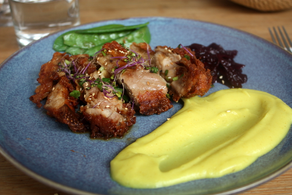

Pizzeria

Fast-Food

Le Grand BainUn petit coup de cœur pour le lieu, sa cuisine et son équipe. Car ce Grand Bain, dont la déco à l'ancienne (dans son jus, diront les amateurs de bons mots) et chaleureuse, sa petite rue où prend place une terrasse, c'est un peu comme une chouette surprise où on ne l'attendait pas. La cuisine est séparée de la salle par de grandes vitres sur lesquelles sont marqués les plats proposés. Entre les œuvres de street-art, la piscine et quelques rades d’un autre temps, le Grand Bain est un précipité culinaire résolument singulier dans un quartier en mouvement perpétuel. Le chef anglais Edward Delling Williams balance des petites assiettes gourmandes et rudement bien maitrisées. Belles bouteilles, bon pain, service souriant et salle à la déco hipster totale branchouille blindée. |
|
Adresse: 14 Rue Denoyez, 75020 Paris Site Web: www.legrandbainparis.com Contact: 09 83 02 72 02 |
|
DeliaDilia, c'est un restaurant semi-gastronomique de spécialités italiennes, dirigé par Michele Farnesi, jeune chef talentueux dont les expériences sont multiples. Un restaurant convivial au décor naturel et chaleureux à base de briques, de zinc et de bois. Dans l'assiette, on revient à l'essentiel avec une cuisine italienne de grande qualité. Vous y trouverez une cuisine raffinée et un chef passionné. Entrée et plats conseillés excellents ainsi qu'un très bon accueil du chef et du serveur. Exceptionnel, une claque, entre la découverte de nouvelles saveurs, le mariage des différents ailments et des textures est d'une grande maîtrise! |
|
Adresse: 1 Rue d'Eupatoria, 75020 Paris Site Web: www.dilia.fr Contact: 09 53 56 24 14 |
|
Le BaratinLe temps n’a pas de prise sur ce restaurant emblématique. Depuis l’ouverture du Baratin il y a trente ans, la juteuse cuisine française de Raquel Carena, figure de proue de la bistronomie parisienne, reste le phare culinaire du 20e arrondissement. Une adresse qui ne désemplit pas, qui encanaille le tout-Paris et les touristes aventureux. La cuisine est très bonne. |
|
Adresse: 3 Rue Jouye-Rouve, 75020 Paris Site Web: www.facebook.com/pages/Le-Baratin Contact: 01 43 49 39 70 |
|
An Di An Di« An di an di ! », formule rituelle lancée par les mères vietnamiennes à leurs enfants pendant le repas pour « Allez, mange, mange ! ». Beignets de crevettes accompagnés d'une mayonnaise au wasabi, canard confit « aux cinq parfums » sur un nid de nouilles croustillantes et quelques feuilles de chou de Shanghaï : nous sommes ici vous l'aurez compris dans une cuisine franco-vietnamienne légèrement fusionnante à la marge, délicate et de qualité, pilotée dans une petite cuisine ouverte au format de poche par Nhat Pham et Adeline Gobin. |
 |
|
Adresse: 19 Rue du Liban, 75020 Paris Site Web: www.facebook.com/andiandi Contact: 09 81 26 97 10 |
|
Pizzeria |
Fast-Food |
Café-Bar |